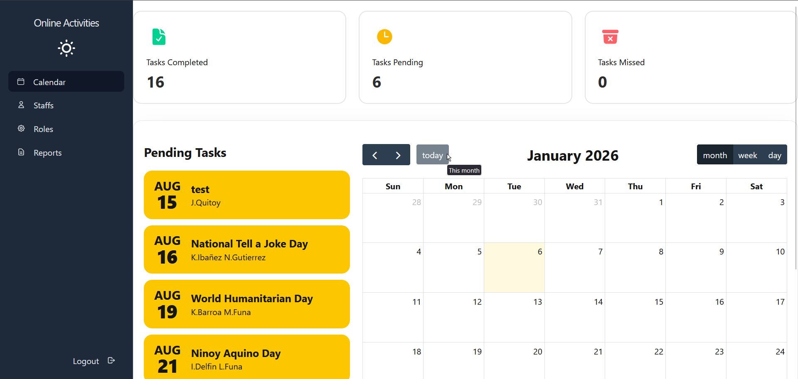
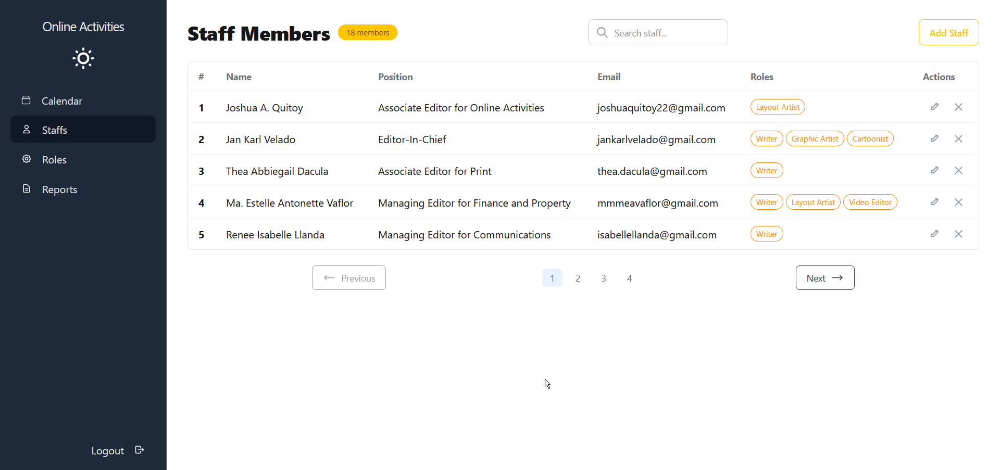
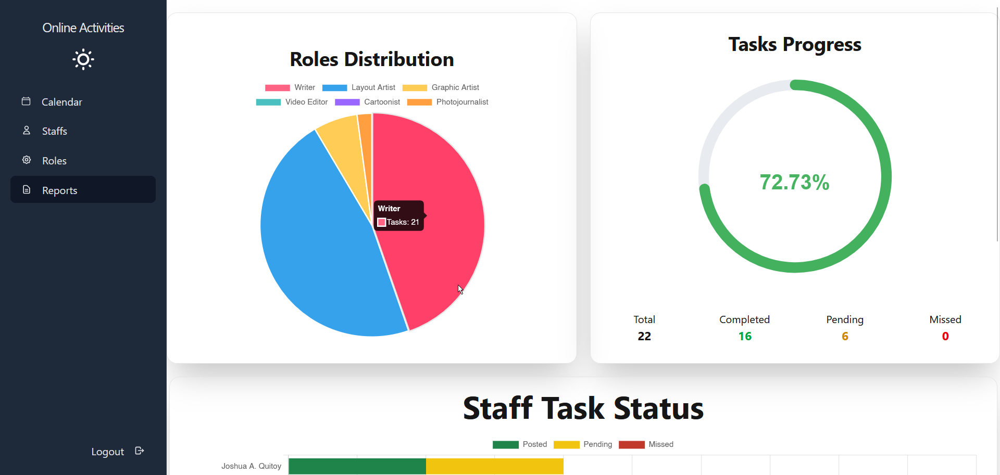
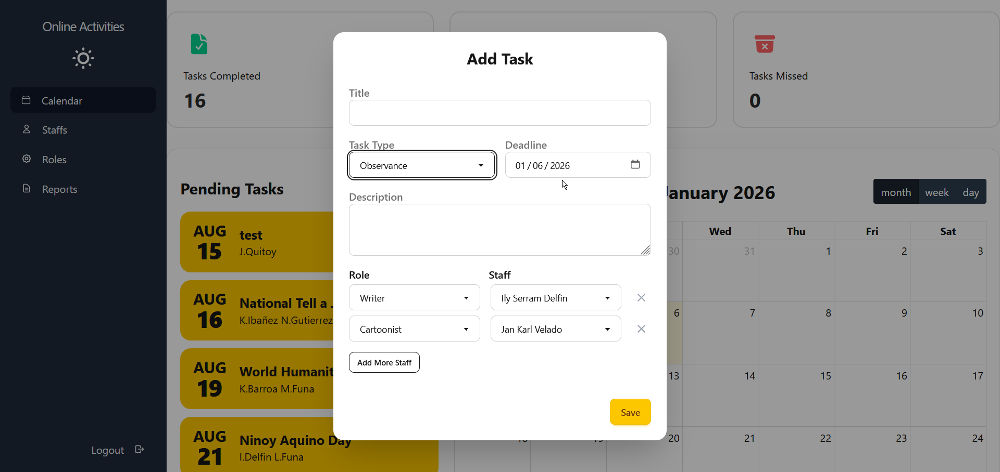
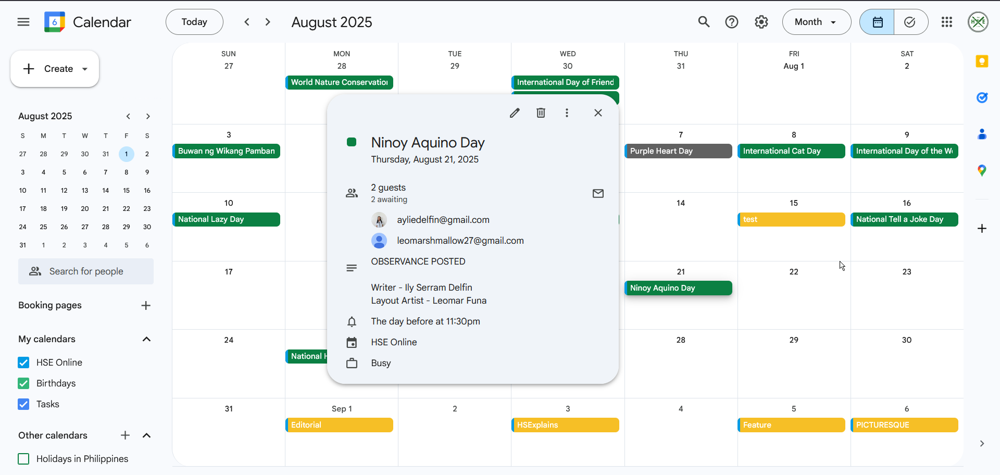
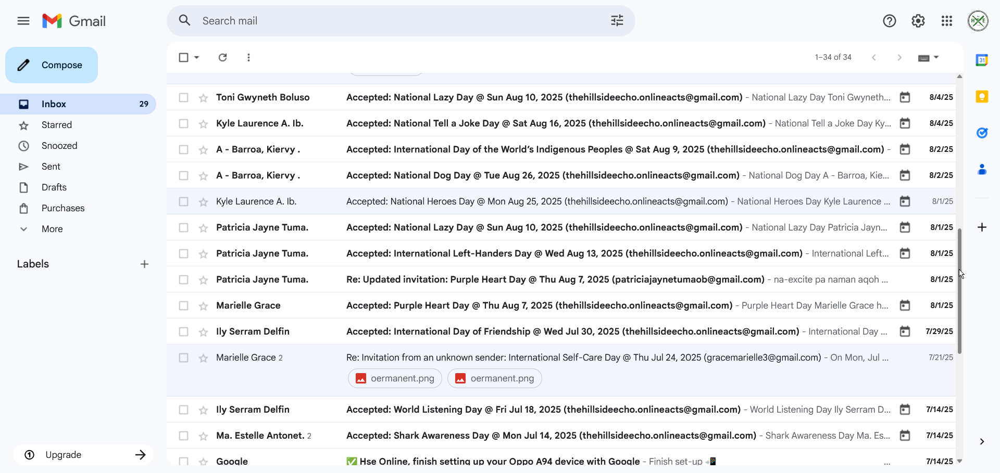
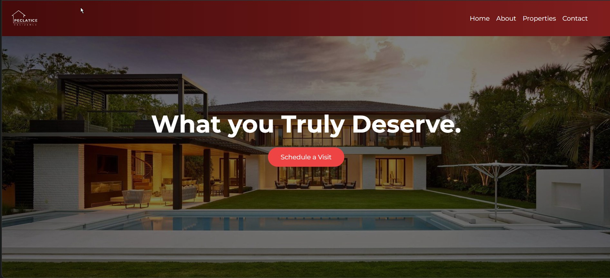
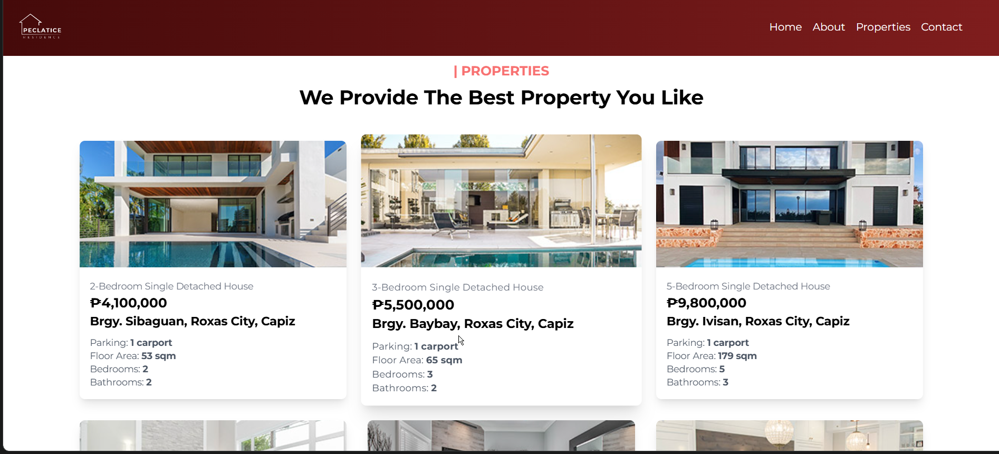
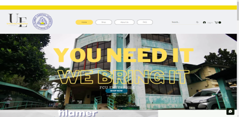
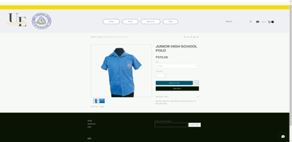

A comprehensive workflow automation tool designed to streamline content publishing and staff coordination for online activities. The system provides an intuitive dashboard for managing posts, scheduling content, assigning tasks to team members, and tracking the progress of online campaigns and activities.






My Role
As the Project Manager, Full-Stack Developer, and Technical Writer, I demonstrated my ability to adapt and manage multiple responsibilities simultaneously despite the substantial workload. I designed and built the entire system from the ground up, automated google calendar sync, created the responsive front-end dashboard, and implemented real-time notifications for task updates. Additionally, I conducted user research and produced comprehensive documentation to ensure the system met staff needs.
Technologies Used
DjangoPythonHTMLDaisyUIMySQLJavaScript
Peclatice Residence
Project Manager/Front-End Developer2024
A premium real estate showcase website designed to highlight luxury residential properties. The website features elegant design, smooth animations, and an intuitive user interface that allows potential buyers to explore high-end residences with detailed property information, image galleries, and virtual tour capabilities.


My Role
As the Front-End Developer, I focused on creating a visually stunning and responsive user interface that reflects the premium nature of the properties being showcased. I implemented smooth scroll animations, interactive property galleries, and ensured cross-browser compatibility. I worked closely with the design team to bring their vision to life while maintaining optimal performance.
Technologies Used
HTMLCSSJavaScriptTailwind CSS
FCU University Enterprise Online Shop
Project Manager2023
A comprehensive e-commerce platform developed for the university enterprise, enabling students, faculty, and staff to purchase official merchandise, school supplies, and university-branded items online. The platform streamlines the purchasing process and provides a seamless shopping experience with secure payment integration.


My Role
As the Project Manager, I was responsible for ensuring that our team was on schedule. I analyzed whether or not some features where needed or not and managed our team based on their strengths. I also guided our team on how we should present ourselves, leading us to win the Best Research award for the TVL strand.